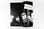
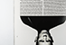
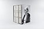

Brian Kall is a designer living in Toronto, Canada. He holds a Bachelor of Applied Science in Civil Engineering from the University of Ottawa and is a 2017 graduate of the York/Sheridan Program in Design.
Most recently, he was a co-chair of the YSDN2017 graduation showcase, coordinating multiple teams and a wide variety of media. He is currently seeking opportunities for employment.
A collection of critical writing about mainstream movies, one of society's most significant sources of culture.Articles cover topics such as James Bond and feminism, Star Wars and originality, and Rocky and race.This magazine calls for creators and viewers to consider the perspectives that films present.
This collection of books is a physical representation of the opposing philosophical standpoints of Creationism and Darwinism.Text from the Bible’s The Book of Genesis and Charles Darwin’s The Origin of Species interact with each other.